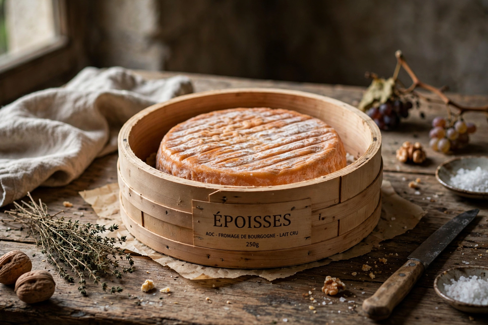

| Époisses | |
|---|---|
| Type | Soft cheese, washed rind |
| Country | France |
| Region | Burgundy, Côte-d'Or |
| Milk | Cow |
| Aging | At least 6 weeks |
| Certification | AOC 1991, AOP |

Époisses is a pungent soft-paste cows'-milk cheese manufactured in the village of Époisses in the Côte-d'Or department of Burgundy, France. It is often cited as one of the most strongly smelling cheeses in the world, and anecdotes claim it was banned from the Paris Métro.
Tradition attributes its creation to Cistercian monks in the 16th century. Production declined after the Second World War and was revived in 1956 by Robert and Simone Berthaut, whose fromagerie became its best-known producer.
Made from whole cow's milk, the curd is washed repeatedly in brine and Marc de Bourgogne, a local pomace brandy. The washing encourages Brevibacterium linens, giving the rind its orange colour and powerful aroma. The interior becomes soft, creamy and spoonable when fully ripe.
Époisses is sold in wooden boxes, either as a large round of about 250–300 g or smaller portions. The flavour is rich, salty, sweet and meaty, far milder than the smell suggests. It is eaten with a spoon and pairs with Burgundy wines and marc.
Bazaar · French cheese · Burgundy